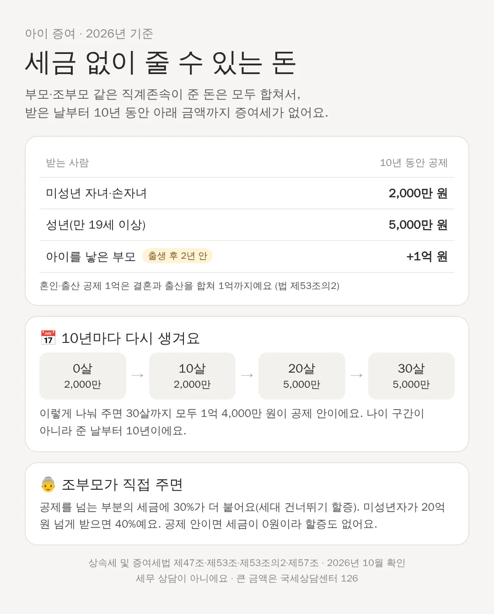

아기에게 세금 없이 증여할 수 있는 돈은 얼마일까? (2026년 기준)
할머니가 주신 돈, 부모가 모아 둔 돈을 아기 통장에 넣어도 될까요? 법에는 세금 없이 줄 수 있는 금액이 정해져 있어요. 미성년 자녀는 부모·조부모가 준 돈을 모두 합쳐 10년 동안 2,000만 원까지예요.
📌 3줄 요약
- 부모·조부모가 미성년 아이에게 준 돈은 모두 합쳐 10년 동안 2,000만 원까지 증여세가 없어요.
- 10년이 지나면 공제가 다시 생기고, 성년(만 19세)부터는 5,000만 원이에요.
- 조부모가 공제를 넘겨 손주에게 바로 주면 세금에 30%가 더 붙어요.
증여재산공제: 세금을 매기기 전에 빼 주는 금액

증여세는 받은 돈 전부에 매기지 않아요. 상속세 및 증여세법 제53조는 주는 사람과 받는 사람의 관계에 따라 먼저 빼 주는 금액을 정해 두었어요. 이걸 증여재산공제라고 해요. 아이가 부모·조부모 같은 직계존속에게 받으면 미성년자는 2,000만 원, 성년은 5,000만 원을 빼요. 받은 돈이 이 금액 안이면 낼 세금이 0원이에요. 공제를 넘는 부분에는 세율이 붙는데, 과세표준이 1억 원 이하면 10%예요.
엄마·아빠·할머니·외할아버지가 한 바구니예요
공제는 주는 사람마다 따로 생기지 않아요. 같은 조문은 직계존속에게 받은 돈을 모두 합쳐서 공제를 적용한다고 정해요. 그래서 10년 안에 엄마가 1,000만 원, 친할머니가 1,000만 원, 외할아버지가 500만 원을 주면 합계 2,500만 원이에요. 2,000만 원을 넘는 500만 원에는 세금이 매겨져요. 형제자매나 삼촌·이모 같은 다른 친족은 따로 10년에 1,000만 원까지 공제돼요.
10년마다 다시 생겨요
공제는 '이번에 받기 전 10년 안에 받은 돈'을 합쳐서 봐요. 나이 구간이 아니라 준 날부터 세요. 예를 들어 태어나자마자 2,000만 원을 받았다면 그날부터 10년이 지나야 다시 2,000만 원이 생겨요. 0살 2,000만, 10살 2,000만, 20살 5,000만, 30살 5,000만으로 나눠 주면 30살까지 모두 1억 4,000만 원이 공제 안이에요. 다만 성년 공제 5,000만 원도 10년 안에 받은 돈을 합쳐서 보니, 15살에 2,000만 원을 받았다면 20살에는 나머지 3,000만 원만 공제돼요.
아이를 낳은 부모도 1억 원을 더 받을 수 있어요
2024년부터 혼인·출산 증여재산공제가 생겼어요(법 제53조의2). 아이의 조부모가 아이를 낳은 부모에게 출생일부터 2년 안에 주면, 기본 공제와 따로 1억 원까지 더 빼 줘요. 결혼할 때(혼인신고일 앞뒤 2년) 받은 공제와 합쳐서 1억 원이 한도예요. 이 공제는 아이가 아니라 '아이를 낳은 부모'가 받는 돈에 쓰는 거예요.
조부모가 손주에게 바로 주면 세금이 더 붙어요
아이의 부모가 살아 있는데 조부모가 손주에게 바로 주면, 공제를 넘는 부분의 세금에 30%를 더해요(법 제57조). 손주가 미성년자이고 받은 돈이 20억 원을 넘으면 40%예요. 이 할증은 세금에 곱하는 거라, 공제 2,000만 원 안이면 원래 세금이 0원이고 더해질 것도 없어요. 큰 금액이라면 국세상담센터(126)나 세무사에게 먼저 확인하세요.
돌잔치 축하금은 어떻게 봐요?
법 제46조와 시행령 제35조는 사회 통념상 인정되는 축하금·기념품·부의금 같은 돈을 증여세 비과세로 정해요. 돌잔치나 생일에 받은 축하금이 여기에 들 수 있어요. 다만 얼마까지가 '사회 통념'인지는 법에 숫자로 정해져 있지 않고, 축하금이 아이 돈인지 부모 돈인지도 사안마다 달라요. 축하금을 모아 아이 통장에 크게 넣을 계획이면, 증여로 보고 공제 안에서 신고해 두는 편이 기록이 깔끔해요.
⚠️ 세무 상담이 아니에요. 2026년 10월에 검색으로 확인한 법 조문을 쉽게 옮긴 것이고, 세법은 해마다 바뀔 수 있어요. 큰 금액이나 부동산·주식 증여는 국세상담센터(126)나 세무사에게 확인하세요.
📚 출처
📄 상속세 및 증여세법
법제처 국가법령정보센터 · 제46조·제47조·제53조·제53조의2·제55조·제57조·제68조·제69조
👤 누가 쓴 자료예요? 국회가 만든 법률을 법제처가 원문 그대로 공개하는 곳이에요. 증여세를 매기기 전에 빼 주는 금액(증여재산공제), 조부모 할증, 신고 기한이 이 법에 적혀 있어요.
📄 상속세 및 증여세법 시행령
법제처 국가법령정보센터 · 제35조(비과세되는 증여재산의 범위 등)·제46조의3
👤 누가 쓴 자료예요? 법률을 실제로 적용하는 자세한 기준을 정한 대통령령이에요. 축하금처럼 세금을 매기지 않는 돈의 범위가 여기 있어요.
🔎 자료에 적힌 내용만 옮겼어요 · 자료를 고르고 옮기는 방법